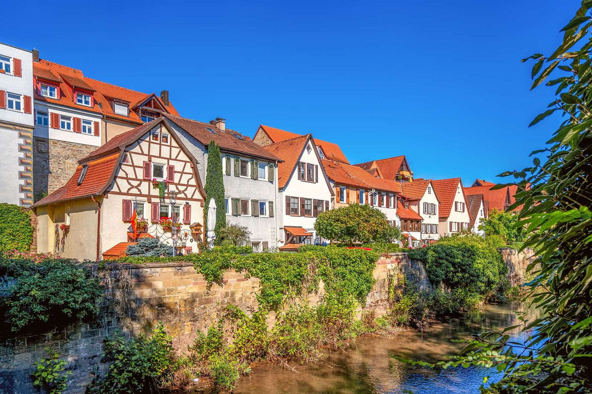

- Startseite
- Über uns
Über uns

Geschichte
Seit über 60 Jahren
Roland Scheuer gründete im April 1961 in Besigheim eine Steuerkanzlei. Seit 1965 befindet sich die Kanzlei in den heutigen Räumen in Bietigheim-Bissingen. Im Januar 2005 brachte Roland Scheuer seine Kanzlei in die Partnerschaftsgesellschaft Scheuer & Partner ein, deren Partner er weiterhin war.
Die Kanzlei hat sich als kompetenter Berater in der Region einen Namen gemacht. Seit nunmehr über 60 Jahren liegt unsere Stärke in der interdisziplinären Ausrichtung. Dies ermöglicht uns passende Lösungen in den Bereichen Steuerberatung, Bilanzierung und betriebswirtschaftliche Beratung zu erarbeiten und umzusetzen. Mit gleichem Engagement beraten wir im Rahmen der Finanzplanung und in wirtschaftsrechtlichen Fragen.
1961
Gründung in Besigheim
1962
Umzug nach Bietigheim
1965
Umzug nach Bissingen
2005
Einbringung der Kanzlei in die Partnerschaftsgesellschaft Scheuer & Partner durch Roland Scheuer
2011
Aufnahme von Frau Sandra Häusser als Partnerin
2026
Aufnahme von Frau Jasmin Titscher als Partnerin
Das Team
Rund 30 Personen
Rund 30 Personen sind in unserer Kanzlei tätig. Diese Größe lässt genügend Raum für Individualität und führt zur Identifikation mit den Anliegen unserer Mandanten.
Unsere Größe bietet auch das notwendige Potential zur Lösung komplexer und umfangreicher Aufgaben. Ohne Spezialwissen wären diese nicht zu lösen.
Unsere Mandanten verfolgen ehrgeizige Ziele. Letztendlich steht die bestmögliche Beratung von Unternehmern und Privatpersonen im Mittelpunkt unserer Tätigkeit.
Der richtige Ansprechpartner
Unsere Ansprechpartner stellen sich vor. Sie beraten und unterstützen Sie gerne in steuerlichen Angelegenheiten. Kontaktieren Sie uns einfach! Wir sind gerne für Sie da!
So finden Sie uns
Hier finden Sie unsere Adressdaten und Bürozeiten. Besuchen Sie unsere Kanzlei! Wir nehmen uns gerne Zeit für Sie.
Kontakt
So finden Sie uns
Hier finden Sie unsere Adressdaten und Bürozeiten. Besuchen Sie unsere Kanzlei! Wir nehmen uns gerne Zeit für Sie.